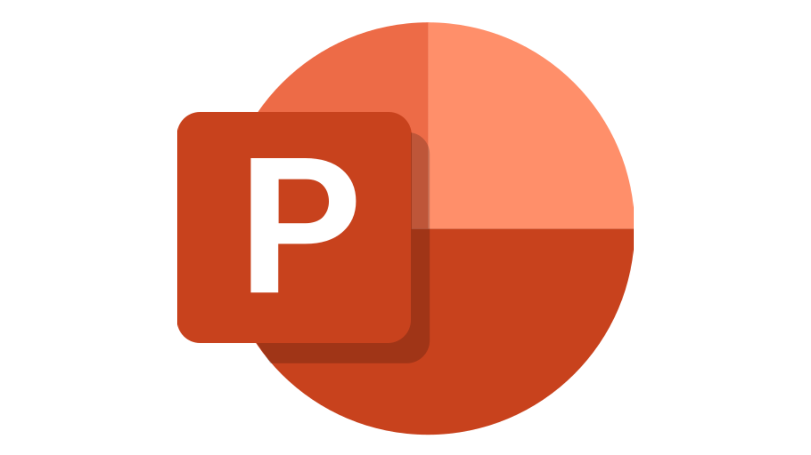

O que é o PowerPoint?
O PowerPoint é um software de apresentação que faz parte do pacote Microsoft 365. Ele permite que você crie slides que podem conter texto, imagens, gráficos, vídeos e outros elementos multimídia. É amplamente utilizado em ambientes corporativos, educacionais e pessoais para apresentar ideias, projetos e informações de forma visual.
https://icon-icons.com/pt/icone/microsoft-alimentação-ponto-office-Trezentos-e-sessenta-e-cinco-logo/145723
Principais Funcionalidades
1. Interface do Usuário
Painéis: A interface é dividida em painéis que incluem o painel de slides (onde você visualiza e edita os slides), o painel de notas (para adicionar anotações) e a barra de ferramentas (para acessar as funcionalidades).
Temas e Modelos: O PowerPoint oferece uma variedade de temas e modelos pré-projetados, facilitando a criação de apresentações com um design coeso.
2. Criação de Slides
Adicionar Slides: Você pode adicionar novos slides facilmente, escolhendo layouts diferentes como título, conteúdo, gráficos, entre outros.
Organização: Arraste e solte slides no painel de visualização para reorganizá-los conforme necessário.
3. Inserção de Conteúdos
Texto e Formatação: Insira caixas de texto e formate-as com diferentes fontes, tamanhos, cores e estilos.
Imagens e Vídeos: Adicione imagens, gráficos, vídeos e áudios para enriquecer sua apresentação.
Gráficos e Tabelas: Insira gráficos e tabelas para representar dados de forma visual.
4. Transições e Animações
Transições entre Slides: Aplique transições para criar efeitos entre slides, tornando a apresentação mais dinâmica.
Animações em Elementos: Adicione animações a textos e objetos para destacar informações importantes durante a apresentação.
5. Apresentação
Modo de Apresentação: Utilize o modo de apresentação para exibir seus slides em tela cheia. Você pode avançar os slides com o teclado ou um controle remoto.
Notas do Apresentador: Use a seção de notas para se lembrar de pontos importantes enquanto apresenta.
6. Colaboração e Compartilhamento
Coautoria: O PowerPoint permite que várias pessoas trabalhem na mesma apresentação simultaneamente, facilitando a colaboração em equipe.
Salvar na Nuvem: Salve sua apresentação no OneDrive ou SharePoint para acessá-la de qualquer lugar e compartilhar facilmente com outros.
Como Começar a Usar o PowerPoint
-
Passo 1: Acessar o PowerPoint
Abra o Microsoft PowerPoint através do seu computador ou do navegador, se estiver utilizando a versão online do Office 365.
-
Passo 2: Criar uma Nova Apresentação
Selecione "Novo" e escolha um modelo ou inicie uma apresentação em branco.
-
Passo 3: Adicionar e Organizar Slides
Clique em "Novo Slide" para adicionar slides e escolha o layout que melhor se adapta ao seu conteúdo.
-
Passo 4: Inserir Conteúdos
Utilize as opções de "Inserir" para adicionar texto, imagens, gráficos e outros elementos. Formate o conteúdo conforme necessário.
-
Passo 5: Aplicar Transições e Animações
Acesse a aba "Transições" para aplicar efeitos entre os slides e a aba "Animações" para animar objetos dentro dos slides.
-
Passo 6: Apresentar
Quando sua apresentação estiver pronta, clique em "Apresentação de Slides" e escolha "Do Começo" para iniciar a apresentação.
-
Passo 7: Salvar e Compartilhar
Salve sua apresentação regularmente e, ao finalizar, utilize a opção "Compartilhar" para enviar o arquivo para colegas ou apresentá-lo online.
Dicas de Uso
-
Utilize Recursos Visuais: Imagens e gráficos tornam a apresentação mais envolvente. Evite excessos de texto nos slides.
-
Pratique a Apresentação: Familiarize-se com o conteúdo e as transições antes de apresentar.
-
Utilize o Modo de Apresentador: Esse modo permite ver suas notas e o próximo slide, enquanto o público vê apenas o slide atual.
Cursos indicados
Para o PowerPoint recomendamos esses 3 cursos. O primeiro é do canal TechTodos, o segundo canal é do Certificado Cursos Online e o último da Alura.